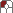
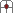
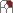

UI Elements
Screen layout
The screen is divided into 4 main panels:
The View Window, which allows you to preview your creations in real time
The Page List, which lets you manage operator pages
The Operator Page Window, in which you can stack operators
The Properties Window, in which you can edit the properties of operators.
To give a window focus,  click inside it.
Each of these windows has a context menu that is accessible through the triangle icon in its title bar or via a  middle mouse button double-click inside the window. You can change the screen layout by dragging the dividers between the views by the divider anchors (left/right) or by clicking and dragging from anywhere else on the page list or operator page title bars (up/down).
Status bar
The status bar contains the following information:
Mouse functions in the currently active window. The actions denoted in brackets are performed when you double-click.
The type of data you are currently viewing in the View Window
Performance data (frames per second, milliseconds per frame, number of triangles, number of vertices, number of batches, texture calculation time)
The camera position (if the Mesh View is active), the cursor position in the Operator Page or the status of the last autosave operation.
Adjusting Parameters
Numerical operator parameters can be adjusted in a variety of ways:
Click the value and type.
Click and drag left and right with the to adjust the value. Use the  right mouse button for larger steps.
Hold the Ctrl key to scale linked parameters equally.
Hold the Alt key to scale linked parameters proportionally.
Adjusting Colors
A color dataset consists of four values: Alpha, Red, Green, Blue. R, G and B act as linked parameters. Clicking the [...] button will open a color picker.
Linking Textures
In some situations, it's possible to remotely link a texture into an operator. I such cases, you can use the texture selector component. Select the object to link with the Find an op! Dialog ([...] button), choose from the named operators on the current operator page [..] button or simply type a name. The [->] button jumps to the linked operator in the Page Window.